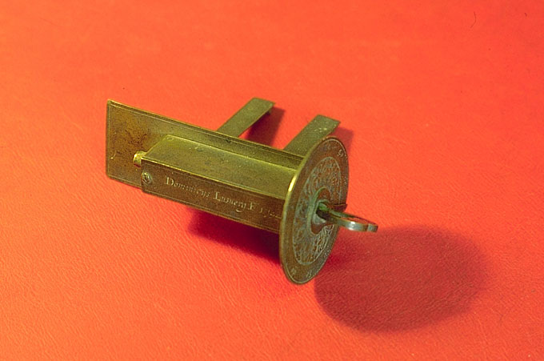
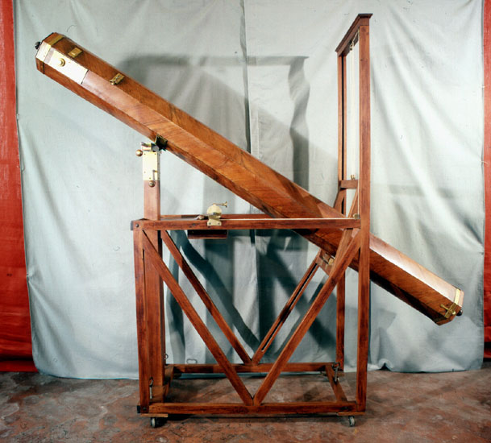
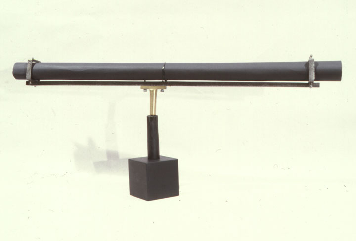

Torretta Room

Bologna, 1752
Ercole Lelli (Bologna 1702-1766)
spruce wood
length from 720 to 980 cm
The Bolognese Prospero Lambertini, who became pope with the name of Benedict XIV, bought in Rome, in 1747, the entire laboratory of Giuseppe Campani from his daughters who had continued the activity and donated it to the Institute of Sciences. Most of Campani's relics, which include, among other things, hundreds of metal shapes for all stages of the processing of the various types of lenses and a dozen extraordinary lenses of various focal lengths and signed by the author, is now preserved at the Physics Museum of the University of Bologna. On the occasion of the gift, Ercole Lelli built a machine for mounting Campani's long focal length lenses, which was erected in the courtyard then existing south of the tower.
In the Commentaries of the Institute of Sciences (Volume III, 1755, p. 19) we find the following quotation which recalls the gift of the Pope and describes Lelli's machine: "... Benedictus XIV ad omnes, quaecumque se darent, occasiones intentus, hanc arripuit: very elaborate vitra, et lentes Campanae pulcherrimas,…, in Institutum invehi jusserat, & dioptricae officinam consterat. Hic illum non fugit de Specula; duasque ex objectivis Campanae lentibus longe pulcherrimas, & foci distantia insignes, ad eam deferri jussit, quibus astronomi in subtilioribus capessendis observationibus, uti opus esset, uterentur. Egregium sane munus; nam lentes tales numquam antea bononiensis Specula obtinuerat. Quo etiam machinam condidit commodissimam, expeditissimamque, qua telescopia quaeque vel longissima possint dirigi. Longiora tamen quam quae memoratis modo lentibus componuntur, locus non capit. Haec adhuc ad Astronomiam accesserunt. "
Lelli's machine is not explicitly mentioned in the inventories, however in one of Eustachio Zanotti's handwritten notes to the inventory of 1746 (revised after 1757) the wooden tubes for the 11-foot Campani lens, for the one from 22 feet and for an unspecified 30-foot lens, a length very similar to the remaining 33-foot Campani lens. Square wooden tubes, all of identical workmanship, corresponding to the above specifications, and some related accessories, have been traced and are listed here:
Mounting for the 10.5-foot lens: not found. However, an objective lens with a focal length of 12.5 Bolognese feet (c. 480 cm) was found, with the inscription Joseph Bruni Bononiae f. A. 1767 / p. 12 [Inv. MdS-29]. In the inventory of 1746 and in the Note of 1749 two lenses by Bruni are named: this and another with a long inscription, preserved in the Physics Museum and dated 1771. Giuseppe Bruni, mechanic of the Institute of Sciences, had been entrusted to , on the death of Ercole Lelli, the equipment of Campani donated to the Institute. To demonstrate his competence and the state of efficiency of the machines, Bruni was required to carry out an objective annually, with these machines, in the presence of the academic authorities.
Mounting for the 22-foot lens [Inv. MdS-2]: it consists of two square tubes with the external side of 9 cm, respectively 381 cm and 409 cm long. A tube with a circular section of 0.8 cm of external diameter protrudes from the shorter tube for 38 cm, which can be inserted in one of the ends of the longer tube, obtaining a total length of 790 cm, equal to about 20.8 feet Bolognese. A lens holder [Inv. MdS-63] designed to receive Campani's 22-foot lens. It is secured to the tube with a hook that finds a brass slot in this. A cardboard tube is adapted to the free end of the shorter tube [Inv. MdS-133 °], equipped with a black wooden ring, which interlocks an ocular torch [Inv. MdS-62], 18.6 cm long, which mounted a lens of 3.2 cm in diameter and about 10 cm in focal length, as can be judged by the distance between the lens seat and the field diaphragm. With this eyepiece, the magnification was almost 80 times and the field of view was 26 minutes of arc. At 370 cm from the ocular end, therefore from the shorter tube, a brass slot protrudes, which was to serve as the suspension point of the telescope.
Mounting for the 30-foot lens [Inv. MdS-1]: there are four square tubes, which enter each other by interlocking. The external sides are respectively 12, 11, 9 and 7 cm and the lengths of 251, 536, 536 and 536 cm, for a total length of 18.6 m. If the relative introduction had to be at least 60 cm, as apparently indicated by the introduction marks existing on the second and fourth pipes, then the maximum useful length was reduced to 16.8 m, equal to 44 Bolognese feet. On the other hand, the length of 33 feet was reached, even with only the use of the last three tubes.
The first three tubes have a reinforcement bandage on the ocular side to support the solicitationitation of the introduced tubes. The last tube receives a cardboard tube at the extreme ocular [Inv. MdS-191] with a 55 mm diameter threaded ring, to which two ocular torches, now devoid of lenses, can be fixed, one with a focal length of about 10 cm [Inv. MdS-192] and the other [Inv. MdS-36], missing the section that carried the field diaphragm, about 12 cm. The maximum magnification, with the maximum achievable length would have been 196 times and, with the 33-foot objective, 129 times. No montages were found for any of the major objectives. There remains the telescopic eyepiece torch, consisting of three colored cardboard tubes with black wooden ferrules, respectively 41, 42 and 30.5 cm long and having a diameter of 5.5, 6 and 7 cm [Inv. MdS-133 °, b, c]. It can be imagined that Lelli's machine was similar to that depicted in table VIII of Francesco Bianchini's volume Hesperi et Phosphori nova Phaenomena sive observationes circa planetam Veneris, published in Rome in 1728, also composed of square section tubes. In fact, some pulleys and a counterweight have been found that could have been part of such a machine. In 1985 the assembly of the machine was restored - using the tubes made for the 22-foot Campani lens [sheet 29] - by building a new support shaft and a crossbow to prevent the telescope from bending. It was likewise reconstructed on a support of the time [Inv. MdS-61] the pantograph pointing and guiding system, using the description made by Christiaan Huygens of a similar instrumentation (table XXXI of the first volume of the Opera Varia published by J. Vander in 1724).

Germany, 1702
unknown author
cardboard tube with wooden case [Inv. MdS-40], tin tube [Inv. MdS-162]
tube length 276 cm, diameter 9 cm
objective lens (attribution uncertain) [Inv. MdS-31]: focal length 350 cm, diameter 6.7 cm
A letter from Manfredi to Marsili, dated January 10, 1702, recalls how some instruments, including a wooden sextant and two telescopes, had been delivered to Manfredi himself by Filippo, Marsili's brother. Both the inventory of the instruments of the Marsiliana Observatory of 1703 and the Instrumentum donationis of 1712 mention two Germanic telescopes: "Telescopium aliud Germanicum incerti Artificis, duobus convexis perspicillis, ferrous tube pedum Bonon. 7 unc. 3, litera A distinctum. Huic etiam suus est tubus chartaceus, thecae ligneae inclusus, quae eodem charactere artier, intra quem duae oculares lentes aliae repositae sunt, terrestribus objectis inspiciendis. Aliud eadem forma, structura, & magnitude Telescopium, litera B insignatum, cui tubus quoque alter chartaceus convenit, capsule artier lignea, eodem Charactere B distincta, conclusus, cum ocularibus duobus ad usum antea dictum. "
Only one of the two cardboard tubes remains, complete with the turned wooden case. The surviving, greenish, six-pull extendable tube (61 cm long when closed) does not appear to have deteriorated from use, which suggests that the two telescopes have arrived new to Manfredi and that, moreover, the remaining tube has been little used. Even of the two tin tubes, whose telescopes were usually supplied to make them easier to use, only one remains - with all likelihood that of the only one of the two remaining telescopes, 276 cm long, equal to 7.3 feet bolognesi - closed with a screw cap at the extreme objective, identifiable by the progressive widening of the two existing diaphragms inside the tube. There is also a lens without writing (diameter 67 mm, thickness at the edge 5 mm, and focal length 350 cm), in greenish glass, with very few bubbles, one of which is rather large, which, as a diameter, would still be suitable for mounting. existing on the extendable tube. However, it seems to have too long a focal length for the instrument, although it was not possible to have an objective confirmation of the length of the telescope, as it was impossible to open the tube. Moreover, this lens adapts well to the length of two telescopic tubes [next] in pressed cardboard, which could be part of the long “tubus chartaceus” of Geminiano Montanari's 11.6-foot telescope. The eyepiece had a focal length of 69 mm and consisted of a lens with a diameter of 52 mm, the field was limited to 31 mm by a diaphragm. The distance of the ocular lens from the hole for the eye was 44 mm.
late 17th century?
Unknown author and location
Pressed cardboard
length 240 cm +120 cm, diameter 12 cm
These are two pressed cardboard tubes, probably of late seventeenth-century construction, of which there is no trace in the inventories. It can be assumed that they were used as a mount for some lenses. At the ends there are marks of a paper joint made for the purpose of joining them and transforming them into a single tube. The longer tube is in fact formed by two tubes of shorter length joined with the system just described. The overall length of about 345 cm, taking into account the coupling, coincides with the focal length of the lens without writing (diameter 67 mm, thickness at the edge 5 mm, and focal length 350 cm), in greenish glass, with very few bubbles, of the such as a rather large one, attributed, with some uncertainty, to the survivor of the two Germanic 8-foot telescopes [previous]. However, there may be other tubes that have now disappeared and this would leave the field to the hypothesis that they are part of the long "tubus chartaceus" of Montanari's 11.6-foot (450 cm) telescope [next].
Bologna, 1666
Geminiano Montanari (Modena 1633-1687)
pressed cardboard tube (not found)
objective lens: focal length 450cm, diameter 6.9cm
“Telescopium quator perspicillis convexis, chartaceous tube, sed eo usu friction. Longitudo Telescopii pedum 11 unc. 7, quamquàm tubus in majorem multo 'longitudinem producitur. Hoc etiam theca lignea custoditur. " Thus it is written in the deeds of the Marsiliana donation of 1712 regarding the long telescope of Montanari, astronomer and mathematician. This tube, no longer found today, does not even appear in later inventories. However, there was in the turret of the Specola, since 1746, "A box with different lenses, Crystals and Glasses of different sizes, and measures". One of Eustachio Zanotti's handwritten notes to the inventory of 1746 (revised after 1757) recalls how this box of lenses was given to Ercole Lelli, after Zanotti himself, having found the contents, had held that only "an objective of Montanari ”was worth preserving. From then on the objective is always mentioned in the inventories: Ceschi, in 1843, specifies that it was 19 and a half palms and made in Bologna in the year 1666. In fact, a greenish glass objective was found in the Specola, with many bubbles and with an irregular edge (diameter 69 mm, edge thickness 3 mm, focal length 450 cm) bearing the inscription Geminianus Montanarius Bononiae 1666 (Au P. Anian) Pal 19 ½. The focal length corresponds to 11 feet and 9 ounces, very close, therefore, to that given for the aforementioned telescope, of which we can therefore assume that it was the objective. The fact that in 1712 the tube was described as widely used is comforting in this judgment. Moreover, two pressed cardboard tubes, for a total length of about 345 cm, which could be part of the long “tubus chartaceus” of this telescope [previous], have been traced.
Paris, 1779
Pierre (?) Mégnié (a. late 18th century)
brass and iron
1 telescope
radius 97 cm
Antonio Cagnoli (Zante 1743-1816), diplomat of the Venetian Republic, had founded a private observatory in Verona, supplying it with various instruments of excellent quality. During the cannonade to which Verona had been subjected in 1796, by the French army, this specola had been seriously damaged, so Napoleon had the surviving instruments purchased and divided them between the Observatory of Bologna, that of Brera and the Scuola del Genius. Thus, in 1801, by order of the Directory of the Cisalpine Republic, a Mégnié parallactic machine was assigned to Brera and to Bologna a mobile quadrant of 3 Parisian feet, equal to 2.54 Bolognese feet (c. 97 cm) by the same craftsman. The assignment is reported in the sheet Instruments provided by the Cisalpine Republic (Reg. Spec. Ist. Naz. Sciences, vol XII, February 27, 1801, Arch. Dip. Astron. Bologna). Two Mégnié were active in Paris at the end of the 18th century. Pierre was probably the name of the creator of this quadrant, for the realization of which he had received in 1779 half of a prize of 2400 lire, offered by the Académie des Sciences of Paris five years earlier (Daumas op. Cit.). Mégnié, on the other hand, was not able to win the title of "Ingenieur en instruments de mathematiques de l’Académie", which was up for grabs at the same time, but the instrument was so much appreciated that it also received the 2600 lire of a Monthyon prize. In the inventory of 1843, drawn up by Ceschi, we read the description of the dial and accessories:
“Cagnoli's dial of 2 and a half feet in radius, supported by a very strong cast iron foot. The whole dial is made of metal. The telescope, which is equipped with an objective and eyepiece, pivots in the center of the dial which is made of metal, and shaves the graduated center together with a vernier which gives the value of a half minute. A small press that relies on the edge of the dial, and which is attached to the telescope by means of a screw, makes it take small movements. By the action of four screws at the foot of the machine, and with the aid of a perpendicular, the plane of the dial can be made vertical, which is rotatable even with small movements around a vertical axis protruding from a graduated azimuth circle. "
The accessories, unfortunately later lost, consisted of:
"A reflector that joins the telescope on the side of the objective; a lantern to illuminate the reflector; a key-operated lever to loosen the foot screws; four small iron plates that are subjected to the aforementioned screws; an iron handle for the other screws; a tin vase that receives the perpendicular ball. "
The foot with the azimuthal movements and the graduated circle still existed in 1935, as can be seen from a photograph taken to illustrate the first model of a telescope with tiles built by Guido Horn-d'Arturo (Publications Oss. Astron. Bologna, III, p . 23, 1935). This photo was then a guide for the reconstruction of the foot, carried out by G. Morigi in 1988.
Munich, 1847
Traugott Lebrecht Ertel (Freiburg 1778 - Munich 1858)
Georg Ertel (Munich 1813-1863)
brass, iron, granite pillars
telescope length 136 cm
lens diameter 10 cm,
diameter of the divided circle 68.5 cm
Among the attempts to awaken the dormant Bolognese astronomy of the first half of the nineteenth century is the purchase of this meridian circle, ordered in 1846 by the then director of the Specola, Ignazio Calandrelli. He left Bologna for Rome in 1848, but three years later he returned temporarily to carry out the task of assembling the instrument, together with its builder Ertel. In fact, we read in the Bottigari Chronicle of 1851 that "The famous artist Mr. Ertel of Munich has been in Bologna for some time: now he is busy placing his great meridian circle in the observatory of our University in those rooms that have been expressly built with drawings and under the direction of our architect Filippo Antolini. " Among the manuscripts in the Archives of the Department of Astronomy you can read, in a booklet titled Use of the Meridian Circle, autographed by Calandrelli himself, the instructions necessary for its development and use.
To accommodate the meridian circle, a room was specially built, next to the large room of the turret. In the Archives of the Department of Astronomy you will find the detailed cost estimate and the drawings for the construction of this room, signed by the engineer architect Carlo Parmeggiani and dated May 5, 1848. Four granite pillars were embedded in the floor [Inv. MdS-60 a, b, c, d] to support the axis of the telescope and the rails (now disappeared) necessary to carry the wrought iron trolley were fixed in the floor [Inv. MdS-57] for the inversion of the instrument. This operation was necessary to estimate some of the measurement errors, through observations made before and after the 180 ° inversion. It had two micrometers and four celestial eyepieces, as well as a spirit level [Inv. MdS-59], with relative leaf spring support [Inv. MdS-58], to verify the horizontality of the axis.
Although instruments of this type required maximum stability, it was placed at about 37 meters above the ground, on one side of the tower, which made it difficult and inaccurate to use, so much so that Lorenzo Respighi will end up using it exclusively as an instrument. zenithal, through reflection in a mercury basin placed in the room below.
On one of the arms you can read the initials Ertel & Sohn, Münich. T. Ertel in 1814 had entered into partnership with Reichenbach - just separated from Utzschneider, Liebherr and Fraunhofer - quickly becoming his successor and faithful prosecutor of his construction technique. Together they signed many instruments with the initials Reichenbach und Ertel, but, after the retirement of Reichenbach in 1820, Ertel continued alone, until, in 1834, he was joined by his son Georg, with whom he established the Ertel & Sohn brand, which would last until to 1890. Ertel created, among other things, the meridian circles for the observers of Christiania, Glasgow and Warsaw. About the same period is the meridian circle built for the Hydrographic Institute of the Marina of Genoa, then transferred to the Brera Observatory in 1924 (see Miotto et al., Op.cit.), While those of Rome (Campidoglio) are earlier. and Catania (formerly at the Roman College in Rome). In the first volume of the Astronomical observations made during the year 1845 at the National Observatory, published by the Washington Observatory (now US Naval Observatory), a very similar instrument is described in detail and it is stated that, due to the suspected presence of imperfections instrumental due to divisions, bending or other not well established causes, the hundreds of observations made with Ertel's instrument were not published. In 1988 the room that housed it was restored, modified in the middle of this century by Guido Horn-d’Arturo, to make the telescope with dowels. On the south-east wall there is a special wooden cabinet built to house the accessories of the meridian circle.
17th century ?
unknown author and location
cardboard, turned wooden case
closed length 18.3 cm, open 44 cm, diameter 3 cm
case length 22.3 cm, diameter 4 cm
"A hand telescope with a grenade case turned to perfection, and good", is written in the inventory of 1746. The tube of this small telescope, of the classic Galilean model, is in glued cardboard, a process for which paper was used shreds. The green exterior shows gilded floral friezes. The optical system is of the simplest models: composed of two lenses, one converging, objective, and one diverging, ocular. It therefore forms a virtual, straight and enlarged image. The only objective lens remains.
Rome, 1685
Marco Antonio Cellio (Rome ? XVII sec.)
tin tube (not found)
objective lens: focal length 540cm, diameter 8.7cm
In the Reviewio suppellectilis astronomicae… of 1727 this telescope with over five meters of focal length is mentioned, a gift from Cardinal Davia: “Ex munere Emi. Card. De Via / Telescopium pedum 14 circiter perspicillis convexis, cuius tubo and ’bractea ferrea." In 1746, however, "a fourteen-foot tin tube for a Celian target" and "a fourteen-foot Celian target in a wooden box" are mentioned separately. Both can be identified with the telescope mentioned in 1727, even if the ritual reference to the donor is missing. The tin tube has not been found, but the white glass lens with bubbles remains - having a focal length of 540 cm, therefore equal to 14.1 feet, a diameter of 8.7 cm and a thickness at the edge of 3. , 1 mm - which bears the inscription Marcus Antonius Cellius f. Romae Anno Dom. 1685. There is not much news of this lover of optical issues, even if it is known that he observed comets and the satellites of Jupiter, on behalf of G.D. Cassini. We are left with his book Description of a way to transport any figure drawn on paper ..., published in Rome in 1686 for the types of Komarek.
Rome?, 17th century
Giuseppe Campani? (Spoleto 1636 - Rome 1715)
extendable tube with two cardboard draws
closed length 50.5 cm, diameter 5.5 cm
There is no trace of this small hand-held telescope in the inventories. It lacks the objective lens, of which the boxwood frame remains. The ocular torch and its attachment are also completely missing. On the ocular side there is a cartouche with the indication "This torch lengthens and is foreshortened according to the views". The manufacture of the telescope and the writing on the cartouche suggest its attribution to Campani.
Rome, c. 1700
Giuseppe Campani (Spoleto 1636 – Rome 1715)
extendable wooden tube covered with printed paper and leather [Inv. MdS-82] length from 435 to 474 cm, diameter 9.5 cm
objective lens [Inv. MdS-27]: focal length 410 cm, diameter 7.5 cm
eyepiece rectifier [Inv. MdS-35]: diameter 4.7
It is mentioned in the Instrumentum donationis of 1712 as: "Telescopium optimae notae, perspicillis duobus convexis, tubo and bractea ferrea, pedum Bonon. X & semis, in Campano elaboratum. Est illi Tubus alter chartaceus productilis, coriacea vagina custoditus. In hoc tria ocularia perspicilla, loculamentis suis inserta, asservantur, quae eidem Telescopii objectivo conveniunt, & terrestribus Corporibus inspiciendis inserviunt. " The tin tube, the three ocular lenses and the lens mount are missing, remaining on the extendable tube only a threaded wooden ring, which was to receive the lens mount itself. Also missing is a later assembly consisting of a square wooden tube.
The surviving objective lens is in slightly greenish-yellow glass, with rare bubbles, ground edge, diameter 7.5 cm, edge thickness 0.4 cm, focal length 410 cm, equal to 10.7 Bolognese feet. It bears the inscription Giuseppe Campani in Rome. There also remains the cardboard tube (without lenses) of a three-lens rectifier eyepiece, called Campanina after the name of the creator (see Daumas, op. Cit.). This type of rectifier train, despite being made up of lenses all of the same glass, due to the particular choice of their focal lengths, acted without worsening the chromatism of the image directly formed by the lens. Part of Campani's fame was due to the invention of this optical system: the Huygens eyepiece, composed of two plano-convex converging lenses, was associated with the image inversion system designed by Campani, consisting of two converging lenses of equal focal distance.
The tube, extendable to six draws, is long, closed, 134 cm, has an external diameter of 9.5 cm and is covered in black leather with golden ornaments. The inner tubes are made of a thin sheet of wood, covered on the outside with printed paper with geometric ornaments colored in blue and inside with recycled paper already used for writing. Once opened and carried over the signs showing the introduction of the various torches, it can be adjusted from 435 cm to 474 cm, including the ocular torch. The latter is 41.7 cm long and lacks the ring to apply the eye to. Its diameter is 4.8 cm and is made up of four parts screwed together, such as to allow the insertion of three lenses with diameters, respectively, 3.9, 4.3 and 3.8 cm, placed at 11.7 , 23.5 and 40.3 cm from the eye. The telescope was used with the tin tube since 1702, as evidenced by a letter from Manfredi to General Marsili, dated 4 July of that year. It is also mentioned in a previous letter from Manfredi to Marsili, dated January 10, 1702, among the instruments delivered to Manfredi by the brother of the general, Count Filippo. The extendable tube appears to be widely used, so the telescope must date back to a date considerably earlier than the latter, although Ceschi, in the inventory of 1843, indicates the date 1700 for the lens. It appears from the Mathematicae by Vittorio Francesco Stancari (Bologna 1713, p. 87) that the telescope was used for the first time by Manfredi and Stancari on January 4, 1702. It was restored in 1993 by N. Scianna (Forlì).
Rome, c. 1714
Giuseppe Campani (Spoleto 1636 – Roma 1715)
extendable tube in cypress and spruce wood [Inv. MdS-193]
length 820 cm, diameter 13.5 cm
objective lens [Inv. MdS-28]: focal length 820 cm, diameter 9.3 cm
It is part of the Donations made to the Astronomical Room of the Institute of Sciences by His Eminence Cardinal Tanari in 1714, among which, in fact, it is mentioned "A telescope of the Bell 22 feet long. And of four lenses, with a cypress tube , and stored in a cypress box as well. " The octagonal tube with seven draws, 13.5 cm wide and 150 cm long, closed, shows no significant signs of wear; its construction date may, therefore, be relatively close to that of the gift. It lacks the invitation for the ocular torch and the lens mount. Eyepiece and objective may have been reused in the assembly with which the telescope was actually used - consisting of "A tin tube divided in two for the 23-foot objective", as recalled by the inventory of 1746, but not found - or in a later mounting in wood. The lens, in greenish glass with a few large bubbles, has a diameter of 9.3 cm, a focal length of 820 cm, equal to 21.5 Bolognese feet, a thickness at the edge of 0.4 cm and bears the inscription Giuseppe Campani in Rome. Mounted on Lelli's machine [file 31] in combination with an eyepiece of about 10 cm [Inv. MdS-62] provided a magnification of 80 times and was considered to be of exceptional goodness, allowing you to easily see the shadows that Jupiter's satellites project on the planet's disk as they transit. Uranus was observed with it shortly after its discovery (March 13, 1781) and the planet's disk appeared better defined than with Dollond's long telescope, recently purchased by the Specola. The tube was restored in 1993 by S. Salemme (Imola).
Rome, c. 1714
Giuseppe Campani (Spoleto 1636 – Rome 1715)
objective lens [Inv. MdS-26]: focal length 1210 cm, diameter 13.8 cm
Giuseppe Campani's long focal length lenses are never mentioned in the inventories. We do know, however, from the Registers of the Specola (vol. IX, dated 26 October 1752, Archivio Dip. Astron. Bo.), That in 1752 a 56 palmi lens, equal to 32.8 Bolognese feet, was tested. It was found among those in charge of the Physics Museum and is now kept at the Astronomy Museum. The lens is made of slightly greenish glass, with very few bubbles, has a diameter of 13.8 cm, a focal length of 1210 cm, a ground edge and a thickness of 0.5 cm at the edge and bears the inscription Giuseppe Campani in Rome. . It was probably used on one of the wooden tubes of Ercole Lelli's Machine, which appears in the inventories as made for an unspecified target from thirty feet.
Vienna, 1732
Jacob Scherer (a.1732)
brass
length 24,5 cm
"Gift of the late Mr. Dr. Eustachio Manfredi / A micrometer with movable wires with its screws, and its indexes, all enclosed within a Casseta, and brass tube. To this micrometer belongs a telescope with two lenses with a brass tube and brass extremity about six feet long "(inventory of 1746). The telescope has not been traced and was no longer identifiable in the inventory of 1843. However, the micrometer - complete with wires and ocular glass - remains identical to that shown in table 4 of section 6 of the volume by Marinoni De Astronomica Specula Domestica (Vienna, Kaliwoda, 1745). It is almost certainly the only remaining specimen of the micrometers designed by Giovanni Giacomo Marinoni of Udine (1676-1755). Cesareo mathematician and then director of the Military Academy of Vienna, erected an astronomical observatory in his Viennese home, described by him in the cited work. The various instruments are displayed in detail, as well as their location in the building, so that the reader can get a precise idea of the layout of an eighteenth-century specola. Marinoni sent Eustachio Manfredi as a gift a wire micrometer, of his own invention, with metal casing and ocular lenses, specially made by J. Scherer in 1732, as can be read in the inscriptions on the instrument on the sides of the casing where the screws are located. recall, both from the sliding part and from the stable one.
Eustachio Manfredio / Celeb. Astronomer Ital.o / Microm. Hoc rec. Invent. / Ad usum Bonon. Academ.ae / J.Jac. Marinonius Nob. Utin. / Friend Optimo d.d. // Jac: Scherer f. / Viennae Austr. / in aedib. D. d. Marinoni / an. 1732.
The instrument was accompanied by a manuscript description and use of the same, moreover, in the last paper of volume IV of the Registers of the Observatory of Bologna, on May 4, 1734, there is the calibration table of the micrometer, by the hand of the same Manfredi: this is the relationship, necessary for the use of a micrometer, between one turn of the micrometric screw and the angular measurement. The first micrometer was made and used by the English William Gascoigne (c.1620-1644) in 1639 (Repsold, op.cit., P. 17), but its invention was revealed only by Richard Townley, after its publication. in December 1666, of a letter by Adrien Auzout (1622-1691) on the technique of measuring the diameter of the planets (Repsold, op. cit., p. 42). The micrometer was then developed by John Bird (1709-1776) and, for the first time in 1745, at Bradley's request, it was applied to a Graham mural quadrant existing in Greenwich. For a broad and exhaustive discussion on the development of the micrometer see the cited work by Randall C. Brooks of 1991.

Rome, 1744
Domenico Lusverg (1669 – a.1744)
brass
length 12 cm, width 12 cm
This micrometer, signed Dominicus Lusverg F. 1744, was an accessory of a parallactic machine, which had been requested as a gift by Eustachio Zanotti to Benedict XIV, with a letter dated 17 June 1744 (Arch. Dip. Astron. Bo., Envelope LX), in which he explains how a previous wooden parallactic machine, built by Manfredi - which is not confirmed in the inventories, but which appears in the registers on 15 September 1727 - had become absolutely useless. Zanotti himself suggested the name of the craftsman in this letter. It is a micrometer with bars made on the model that Philippe de La Hire (1640-1718) had described in his work of 1685, L ’E’cole des Arpenteurs. In Ceschi's inventory of 1843 "a micrometer with metal bars by Domenico Lusverg of 1744" is mentioned, but almost certainly it is not the micrometer mentioned in the inventory of 1799 as "a wire micrometer of Mons. De La Hire" and that it was part of “a little box covered with damask with gilding”, together with compasses and mathematical instruments, but which has now been lost. A micrometer of the same model, but earlier than this one and signed Jacobus Lusverg mutinensis / faat. Romee year 1677 is located at the Seminary of Treviso (Piero Todesco, in preparation).
London, 1739 ?
Jonathan Sisson (1690?-1747)
brass
tube length 36cm, diameter 15cm
focal length main mirror c. 25 cm, diameter 5.2 cm
secondary mirror focal length c. 30 cm, diameter 1.5 cm
It appears for the first time in the inventory of 1746, with no indication of its origin: it can be assumed that it was part of the English instruments ordered by Manfredi. A description can also be found in Ceschi's inventory of 1843: "Gregorian telescope, that is, with two parallel mirrors, both concave, by J. Sisson of England. It consists of a foot-long metal tube, covered with black leather, supported by a metal column screwed into a wooden base, under which three metal griffons are recommended to screw. In this column are inserted appropriate joints, which give the horizontal and vertical movements. The eyepiece, which is direct image, passes through the large mirror. The opening of P [ollici] 2 in diameter is protected by a metal lid. " Manfredi's interest in this type of mirror telescope seems to be stimulated by some letters sent to him by the pontifical archiatrist Leprotti (Bibl. Archiginnasio Bo., Fondi Speciali Leprotti, dated 6 and 13 January 1731) in which we learn that in Rome, in those days, there was a lot of talk about this new type of instrument. The Scottish mathematician James Gregory (1638-1675), in his Optica promota (London 1663), had suggested replacing the lens, hitherto used as an objective, with two concave mirrors, coaxial and parallel, mounted so that their respective focal planes coincided. In practice, this type of optical system was made with a parabolic main mirror and an elliptical secondary mirror, in order to eliminate spherical aberration. The image that the so-called "Gregorian telescope" provides is a non-inverted image, unlike the Newtonian and Cassegrain systems. For this reason and for its ease of use it was widely used in the eighteenth century.
It lacks the eyepiece. The base - which we know to have been of black wood - and the focus screw are of restoration (S. Ciattaglia, Bologna, 1990). The shark skin covering has almost disappeared, although some fragments were found during the restoration. The Specola had already owned a telescope with metal mirrors, of about two feet in focal length, the work of the Englishman Samuel Molyneux (1689-1728). This telescope, with a Newtonian optical system and silver finishes, had been donated by the Prince of Wales to the King of Portugal and from these to Francesco Bianchini who left it to Cardinal Davia, who in turn donated it to the Institute of Sciences. . The Molyneux telescope appears for the last time in the inventory of 1843 (see Baiada and Braccesi for details on this telescope and on the correspondence between Bianchini and Manfredi in this regard).

London, c. 1760-1770
George Adams (Londra 1704-1772)
brass, triangular walnut table with three feet
telescope length 57 cm, diameter 5 cm
This small equatorial bears the inscription G. Adams London. It comes from the scientific cabinet of Lord George Cowper (1738-1789), originally housed in his Florentine residence and purchased in 1790 by the Cardinal Archbishop of Bologna Andrea Giovannetti (1722-1800), with the contribution of some members of the local nobility, as a gift. at the Institute of Sciences. Part of that collection is now in the Physics Museum of this University. The assembly is of a classic model, widely used around 1760: hence the date attributed to the instrument. Ceschi's 1843 inventory gives the following description: "Adams equatorial adaptable to any geographic latitude for which azimuths and heights may occur, as well as the right ascensions and declinations of the stars. All the circles are suitably graduated and equipped with nonj, which give the subdivisions, suitable gears practiced in the contour of these circles are adapted to perpetual screws, for which the small movements are obtained. The machine can be leveled by the action of the three screws applied to the feet of this machine, and by means of two levels entrusted to the azimuth circle, and placed orthogonally to each other. The telescope 1 and ½ feet long is equipped with an achromatic objective of 1 and ½ inch aperture, and with a single celestial occular. Colored glass with metal casing. Three small brass nuts are subjected to the foot screws. Screw cap that defends the lens and its reflector. This machine for its construction is also adaptable to geodetic uses, but without the advantage of repetition ... A triangular walnut table with three feet bound together by crosspieces [Inv. MdS-158], which serves as a support for the equatorial machine. "
The eyepiece now assembled is not the original one, which has not been found and the lack of which does not allow us to say whether, among the many colored glasses for observing the Sun found, there is that of this machine or not. The two levels and the reflector are also missing. The griffons for attachment to the foot and the knob for the declination movements are restored (G. Morigi and S. Ciattaglia, Bologna 1982). George Adams' atelier was founded in 1735 under the sign of Tycho-Brahe's Head, in Fleet Street, initially to produce astronomical globes, to soon move on to the production of other scientific instruments. On the death of the founder he was succeeded by his son George Adams Jr. (London 1750-1795), who will also publish several texts on microscopy, geography, astronomy and physics. Brother Dudley bought all the material left over from George Jr.'s death at auction, keeping the brand until 1830. While at first all the instruments bore the date of manufacture, after 1760 the brand remained simply G. Adams London , as in our instrument, which makes dating difficult.
London 1787
John Dollond Jr. (London ?-1804)
Peter Dollond (London 1730-1821)
mahogany wood tube
tube length 314cm, diameter 14cm
To the possibility, expressed by Euler in 1747, of making achromatic objectives using combinations of different glass pastes, John Dollond (1706-1761) had opposed Newton's demonstrations on the impossibility of such objectives and had corresponded with Euler himself on the subject. However, in 1755, an Uppsala professor, Klingenstierna, sent Dollond a geometric proof showing that Newton's result was false. This, coupled with the fact that Dollond learned of the first achromatic objectives produced and also sold by George Bass, prompted him to build his first achromatic objective. Constructed with a concave flint glass and a convex crown glass lens, it had a focal length of 5 feet (c. 1.6m) and provided brighter images than a normal 15-meter focal length lens. It was presented by James Short to the Royal Society on June 8, 1758. Dollond, who became a Fellow of the Royal Society - receiving the highest scientific award of the time, the Copley Medal - had his process patented, having also learned that several other opticians they had made achromatic objectives with flint glass, according to the George Bass model. Three years after his death, his son Peter filed and won a lawsuit against other craftsmen who, relying on the priority of George Bass's realization and the idea of Chester Moor Hall, denied the validity of the patent. Winning this lawsuit will cut the price of achromatic objectives in half.
This telescope, equipped with an achromatic objective of excellent quality, is part of the instruments purchased by Petronio Matteucci - director of the Specola since Zanotti's death in 1782 - to renew the instrumentation, which remained linked to the English instruments of Sisson of the first half of the century. 38-41]. In the Archives of the Department of Astronomy (envelope XXVIII), the original invoice of the Rubini brothers, dated 5 October 1788, is found in the Assunti d'Istituto for the instruments built by the Dollond company in London. From this invoice we deduce the cost of the achromatic telescope - which bears the word Dollond. London - of 26 pounds, equal to 628 Bolognese lire at the time; the ocular micrometer had cost 18 pounds, equal to 445 lire. The full description can be found in Ceschi's inventory of 1843: "Dollond telescope with mahogany wood tube 8 feet long and divisible into two parts, which are screwed together, equipped with an excellent achromatic objective of 3 and ¾ inches of aperture . This telescope is mounted on a metal frame, through which small vertical and horizontal movements are communicated to the telescope by means of two handlebars. This armor is recommended at the ends of a long triangular-shaped wooden rod which insinuates itself into the large foot of this device sliding over three metal naves. By means of an appropriate mechanism, the rod, on which the Telescope is placed, can rise in order to use the instrument towards the highest regions of the sky. However, the length of the telescope, and the disproportion in comparison with the dimensions of the armature, make the use of this instrument very uncertain due to the strong oscillation to which it is subject. This telescope is equipped with due occulari celesti di diverso ingrandimento muniti ognuno di vetro colorato.
An earthly occular. [Inv. MdS-64
Coperchio metallico che difende l’obiettivo.
Metal cover that defends the lens.
Occular micrometer [Inv. MdS-42] .
One of the celestial eyepieces is missing, of the other only the extreme facing the eye remains, with one of the two lenses and the glass for the Sun. Examining the frame, it is not clear how the fine movements mentioned in the inventory description could act. . The wooden case that contained it was also found.
London, 1787
John Dollond Jr. (Londra ?-1804)
Peter Dollond (Londra 1730-1821)
brass, three-footed triangular walnut table with marble top
tube length 112cm, diameter 9cm
“Dollond parallelactic adapted to the latitude of Bologna, with telescope 3 feet long and achromatic objective with 2 and ½ inches of aperture; equipped with small movements both in Right Ascension and in Declination, which are given by two graduated semicircles, over which appropriate nonj which give the first minutes flow. A small finder is attached to the telescope, whose optical axis can be parallel to its axis. By the action of three screws applied to the ends of the mahogany wood frame on which the machine is mounted, it can level itself as it is indicated by two bubble levels recommended for the same frame orthogonally to each other ... three-footed triangular-shaped walnut tree bound together by crosspieces, sliding over metal naves, with three iron screws to make it stable, which served to support the Dollond Parallactic."
This instrument, which is part of the lot purchased in 1787 [cards 37-41], was equipped, as the inventory of 1843 recalls, with:
“N.3 Celestial occulars of different magnification, each of which is equipped with colored glass for observing the Sun.
A celestial occular with rhomboid micrometer.
Another similar one, in which half there are metal bars.
A circular micrometer of Amici with a celestial occular [Inv. MdS-43] [tab 42].
Two eyepieces holders, in which the eyepieces of the Passage Tool can fit.
An objective micrometer, or heliometer ... [Inv. MdS-41] [tab 41].
A counterweight to be applied to the telescope from the eye side to counterbalance the heliometer.
A piece of tube to add to the eyepiece holder, when the Heliometer is applied.
Reflective to be placed on the side of the objective [Inv. MdS-44]. Cover that defends the objective.
…...
Triangular marble table [Inv. MdS-159] in which some brass pieces are set, with three-stemmed walnut feet, near which are three screws that carry metal naves in order to make it slide; This serves to support Dollond's Parallactic Machine. "
The telescope, equipped with the achromatic and aplanatic three-lens objective, the latest found for the time, by the Dollond company [previous], was used for almost two centuries, remaining in service as a finder on the 60 cm telescope in Loiano until 1982. Originally the machine was equipped with only three celestial and one terrestrial eyepieces. Since the telescope was used in Loiano, where the original tube was tampered with and replaced with a new one, only two abutments could be recovered, without the original attachment of the objective, the eyepiece holder torch and the relative rack and pinion focusing mechanism. . These parts are therefore of restoration as well as the seeker (S. Ciattaglia 1982).
The absence of the original eyepiece holder made the identification of the aforementioned eyepieces problematic, especially since the eyepiece holder of the instrument of the Reichenbach passages, Utzschneider und Liebherr, which would have allowed to identify the two adapters, was not found. mentioned above, if they still exist. The series of eyepieces currently attributed to the instrument, including the one mounted on the telescope, is therefore somewhat hypothetical. An attack was also found to bring a screen with which to observe the Sun in projection, with an original appearance, but not mentioned in the inventory descriptions. This accessory was also reinstated with the missing parts in 1982. Of the various handlebars for the movements, only the one for the declination movements was found, broken in the joint, which was restored in 1982 and on the model of which the one for the the movements in right ascension. The instrument - as shown in the original invoice of the Rubini brothers, dated 5 October 1788, to the Assunti d'Istituto, found in the Archives of the Department of Astronomy (envelope XXVIII) - was paid 63 pounds equal to 1520 Bolognese lire.
London, 1787
John Dollond Jr. (London ?-1804)
Peter Dollond (London 1730-1821)
brass, bronze mirrors, walnut table
tube length c. 100 cm, diameter 13 cm
In the Optics Promota (London, 1663) James Gregory (Aberdeen 1638-1675) had set out the idea, already conceived in 1661, of replacing the objective lens with a concave mirror, or rather two concave mirrors, (the major parabolic, the minor elliptical ) parallel and coaxial, with the focal planes coinciding, in the form that takes the name of Gregorian from him. This instrument - which bears the Dollond signature. London - cost 36 pounds, equal to 865 Bolognese lire, as evidenced by the original bill of the Rubini brothers at the Assunti d'Istituto, dated 5 October 1788, found in the Archives of the Department of Astronomy (envelope XXVIII). The inventory description of 1843 presents it together with its accessories:
Gregorian telescope 2,4 feet long with parallel mirrors in brass tube 4 ounces in diameter, with direct image occular [Inv. MdS-68], which passes through the great mirror: the work of the Dollond. Foot and metal support with small movements led by two handlebars.
Of this instrument there is a second occular of greater magnification [Inv. MdS-135], and a second mirror [Inv. MdS-48], a small comeback, covered in a special iron band box.
Each occular is fitted with colored glass with brass casing.
Three pieces of metal purposely constructed and fixed with screws to the surface of the table subjected to it, hold the feet of the instrument recommended to it.
A metal cover, which closes the opening of the telescope.
Very sturdy walnut board [Inv. MdS-160], similar in shape to the previous one [triangular, supported by three stems linked together for a lower shelf], which serves to support the Gregorian Telescope. "
While many eighteenth-century refractor telescopes are still capable of providing excellent images, this is rarely the case with reflectors. This is due to the degradability of the mirrors - which at that time were not made of glass but worked in a special bronze called "speculum" - and the criticality of the mechanical adjustment of the optics. This specimen, perhaps due to the little use that was made of it, still excellently bears the 80 magnifications provided by the surviving eyepiece. The two handlebars for the movements, the lenses of the second eyepiece and the glasses for the Sun are missing. The finder eyepiece is being restored (G. Morigi and S. Ciattaglia, Bologna 1981).
London, 1787
John Dollond Jr. (London ?-1804)
Peter Dollond (Londra 1730-1821)
brass
“Ocular micrometer with cursor wire, and which can take any angular inclination with external display in which the turns of the screw are marked by means of an index, which serves to move the cursor wire. This micrometer has its own ocular lenses, and a colored glass with suitable metal casing. "
London, 1787
John Dollond Jr. (London ?-1804)
Peter Dollond (London 1730-1821)
brass
The heliometer was an important accessory of the parallactic telescope with achromatic objective purchased in 1787 by the London firm Dollond. The inventory of 1843 describes it as "An objective micrometer or heliometer equipped with two handlebars to produce both its circular motion and the separation of the images" and was supplied together with a counterweight to balance the telescope and an extension tube. for the eyepiece. For this particular type of micrometer, it is an invention made by Pierre Bouguer (1698-1758) in 1748 and improved by Joseph Fraunhofer, who replaced the two primitive objectives, identical and mounted in parallel on the same tube, with an objective single, cut in half along the optical axis. The two halves can slide over each other, each generating an image. When the centers of the two halves coincide, the images of the object under examination overlap. Conversely, it is possible to superimpose the images of two nearby stars, once the separation line of the two lenses has been oriented and the respective centers have been moved away by the desired quantity. As for the micrometer, it is necessary to first determine how many arc seconds the displacement of one millimeter of one center with respect to the other corresponds. It was with the second specimen built by Fraunhofer that Bessel made the first measurements of stellar parallaxes. In our case, instead of an optical system to replace the lens, it is a real additional system to be placed in front of the objective lens, consisting of a diverging lens cut in half along the optical axis, capable of increasing ten percent enlargements provided. As shown in the original invoice by the Rubini brothers, to the Assunti d'Istituto, on 5 October 1788, found in the Archives of the Department of Astronomy (envelope XXVIII), the heliometer was paid 23 pounds equal to 555 Bolognese lire.
Modena, c. 1813
Giovan Battista Amici (Modena 1786 – Florence 1863)
brass
The inventory of 1843 recalls, among the accessories of Dollond's parallactic machine [file 38], this circular micrometer made by Amici - whose date of manufacture or purchase is not known, however - as: "A circular micrometer by Amici with occular celestial ". The fact that among the accessories of Amici's 266 cm focal length Herschelian telescope [following] there was also a tube to be screwed to the eyepiece holder, in order to also use the Dollond parallactic eyepieces, suggests the hypothesis that the micrometer was ordered to Amici together with the telescope itself. For information on Amici, see the following sheet, relating to the Herschelian telescope purchased by the Specola in 1813.

Modena, 1813
Giovan Battista Amici (Modena 1786 – Florence 1863)
walnut wood, brass, wooden support frame
tube length 280cm, diameter 23cm
focal length 266 cm, primary mirror diameter 17 cm
The telescope is described as follows in Ceschi's inventory:
"Herschelian telescope built in Modena by Professor G.B. Friends of the year 1813, composed of a 7-foot (266 cm) long walnut-veneered wooden tube, at the bottom of which a metal mirror measuring 5 and ½ inches (17 cm) in diameter is supported by a special iron armor. On the side of the eye, start a small mirror inclined at 45 °. A small finder with appropriate movement is attached to the outside of the tube to make its optical axis parallel to the axis of the telescope. This machine is supported by a carriage armor sliding over four metal sweeps, and which can also be fixed by the action of three screws on its foot. Appropriate devices are combined with the armature to give the telescope any direction even with small movements.
The telescope is equipped with:
No 6 eyepieces of different magnification.
A metal tube, which is screwed to the eyepiece holder, is used to attach the eyepieces of the [Dollond's] parallactic machine to this machine.
Two metal covers that serve to defend the two mirrors (still existing).
The eyepieces of the telescope are kept in a box [Inv. MdS-91] combined with the frame in which those of the parallactic and other telescopes are also preserved. "
This type of telescope takes its name from Friedrich Wilhelm Herschel (Hannover 1738 - Slough 1822), who built numerous telescopes according to Newton's model - metallic parabolic main mirror, plane secondary mirror inclined at 45 ° - up to dimensions of the order of one and a half meters in diameter of the main mirror and at focal lengths of over twelve meters. With instruments of this type Herschel discovered the planet Uranus in 1781. Amici, an optician, astronomer and botanist from Modena, was also an engineer, architect and professor of geometry and algebra. He achieved such fame in the construction of optical instruments as to induce the Duke of Modena, in 1825, to exempt him from teaching to allow him to devote himself exclusively to instrumental optics. He was called in 1831 to direct the Astronomical Observatory and the Museum of Physics and Natural History in Florence and to hold the chair of Astronomy at the University of Pisa. He created excellent achromatic objectives for telescopes and dioptric microscopes, invented the immersion objective for microscopes, the roof prism and the direct vision dispersive prism, which he takes his name from. He was also a skilled trader in his products. Amici's laboratory diary begins in 1822, therefore the Bologna telescope is not marked. At the beginning of his activity, the time our instrument dates back to, his attention was concentrated above all on mirrors; in fact the telescopes he sent to Milan were not equipped with support armor. This fact gives rise to the supposition that the guillotine setting of the Bolognese instrument was not made in the first person by Amici, even if cited in the inventory of 1843, reported above.
Rome, 17th-18th century
Domenico Lusverg (1669 - a.1744)
wood
28 x 15 cm
Only the wooden box of Domenico Lusverg's ancient compass case remains, described in the inventory of 1843 at No. 51 as "A unfrozen wooden case with internal shutters which contains: A large compass by Domenico Lusverg with two points one of the which stable: his shed with a pen tip, and a stick for pencil. A small faithful steel compass. " In the inventory review of 1849, the loss of the pencil tube of the large compass was already reported. For information on the Lusverg family of artisans see Tabarroni and Todesco.
XVII-XVIII century
unknown author and location
wood
C. 50 cm
The old inventories recall the presence, among the Objects used for drawing, of numerous compasses with two, three and four points, of various sizes. Of those compasses, only two remain, one of which could be recognized in the description given in the inventory of 1843:
"A large wooden compass with an iron pin on the hinge and brass caps, at the two ends of the legs are real of brass with screws to secure them underneath replacement pieces.
iron tip
iron tip pen
brass rod for pencil
Two curved brass tips to measure the diameters of cylindrical and spherical solids. "
Of the accessories only the two iron points remain. The other compass has two fixed points and it could not be found with certainty in the inventories, as a "large compass with fixed steel points" is mentioned several times. Often such a compass is remembered among the instruments kept inside "A Stuccio covered with Damaschino with golden Arabesques and Weapon of his Majesty Pope Benedict XIV", containing various mathematical instruments built by Angelo Lusverg. Both the case and the instruments have long since disappeared and the attribution of this compass to Angelo Lusverg therefore appears extremely uncertain. Also belonging to the drawing instruments are two small cylindrical wooden boxes used to store the accessories of the compasses.
France, 17th-18th century
Nicolas Bion (1652-1733)
brass, wooden case covered in leather
case: 19 x 8 cm
Of the nine instruments originally contained in the case, only a proportional compass remains [Inv. MdS-84], the use of which is accurately described by Bion himself - engineer of the King for mathematical instruments and one of the most famous names of his time - in his Traité de la construction et des principaux usages des instruments de mathématique, whose first edition dates back to 1709. This text provides complete tables of all the articles that Bion's atelier could provide to its customers, even if some instruments, such as telescopes, microscopes and micrometers, are succinctly indicated, probably in order not to make public the construction details, in order to avoid plagiarism. On the title pages of Bion's books appears the address of his atelier, first as Quai de l'Horloge á l'enseigne du Soleil d'or, then as Au Quart de cercle. According to Daumas, Bion's remaining instruments are very few, which makes this case, even if incomplete, very rare, as is the astronomical ring [following].
The case is made of wood, covered with black leather printed with French lilies. The six-inch (approx. 15 cm) compass has the inscription N. Bion a Paris engraved on one face. The six basic scales are engraved there, as in most of these instruments: on one side the line of equal parts, that of planes and polygons; on the other, the line of strings, that of solids and that of metals. On one edge is added the line useful for recognizing the caliber of the guns and on the other a line for determining the diameter and weight of the artillery shells.
Paris, XVII-XVIII century
Nicolas Bion (1652-1733)
golden brass
Diam. 14 cm
The full name of this instrument, which was used to measure the time, is the universal equinoctial sundial. It consists of an external ring - called "of the meridian" - which carries a circular suspension to adjust it to the latitude of the place, by an internal ring - called "of the hours" - pivoted, in the 12-hour position, at right angles to the first and divided into 24 hours, and by a central bar, hinged on the outer ring. The bar features a slit with a declination scale, the months engraved on one side and the signs of the zodiac on the other. By turning the instrument appropriately, a light beam, projected through the small hole on the cursor located in the slot of the bar - an organ that must be adjusted according to the height of the Sun on the equator, which varies from month to month - falls. on the hour scale, thus indicating the local time. The larger models of these rings could indicate the time with the precision of the minute and were for a long time the only means of checking the functioning of a clock, without resorting to an astronomical observatory. The name of Nicolas Bion, Engineer of the King for mathematical instruments, is among the best known of his time, even if he was not the author of any important technical innovation - as recalled by Daumas - and few objects remain of him. However, he possessed a very accurate craft and, above all, excellent playing techniques. He published some works of description and use of various astronomical and mathematical instruments, very widespread at his time and repeatedly re-edited by his children upon his death. In the Traité de la construction et des principaux usages des instrumens de mathématique of 1709, Bion reports the illustration and accurately describes the construction and use of what he calls Anneau ou Cadran Astronomique universel, an instrument identical to the one in our possession.
XVII-XVIII century
unknown author and location
brass
33 x 6 cm
The proportional compass was designed around 1600 and Galileo himself dealt with proportion in those years. Towards the middle of the nineteenth century the proportional compass, after three centuries of life, became an obsolete instrument, to the point that, in 1866, William Stanley defined it "a kind of compulsory ornament" often still present in drawing cases. In England - called "sector", while the term "proportional compass" indicates an absolutely different instrument - it was already used at the end of the sixteenth century by topographers. Only later was it built with stairs expressly designed for sailors, topographers and designers. The proportional compass has been called a universal scale and was used with a pair of compasses with fixed points. The instrument consists of two rulers held together by a flat hinge, so that the movement is equal and uniform. The accuracy of the calculations made depends on the precision with which the hinge is made. In fact, a series of diverging linear scales, arranged symmetrically on each face and ending in a fan shape at the lower end of these, depart from the axis of rotation of the sheets. Similar, therefore, in appearance to an articulated compass, it was available in 6, 9 and 12 inch sizes. The specimen in question - whose engraved scales appear incomplete - belongs to the largest category. When open its length doubles. Its use is based on the property of similar triangles: it is sufficient to conveniently open the arms, report, with the help of a normal pointed compass, the quantities considered between the two corresponding scales and read the divisions on which one falls.
XVIII-XIX century
unknown author and unknown location
brass
16 x 3,5 cm, 15 x 3,5 cm, 16,6 x 2,6 cm
These are three mathematical instruments of an unknown manufacturer: a six-inch proportional compass engraved with the six fundamental scales and two rulers to divide the line of the planes of the compass itself, divided into equal parts with the transversal method, also from six inches.

Bologna, 1708
Vittorio Francesco Stancari (Bologna 1678-1709)
Iron
Telescope length c. 75 cm
The differences of a few seconds of time between the instants of transit of the Sun through the row sundial and those observed at the Lusverg mural semicircle stimulated Stancari to design a completely new instrument: the so-called passage instrument. This instrument, conceived by Stancari at the same time as Römer and Halley, would have made it possible to follow the meridian arc without irregularities. Due to the death of Stancari, which occurred in 1709, however, the instrument was not developed, even if the operations necessary for its rectification are described exactly by Manfredi in his Introductio in Ephemerides of 1715.
"Telescopium lentis suis instructum - as the Instrumentum donationis of 1712 describes it - pedes duos longum (c. 75 cm), hastae fereae alligatum, and cuius medio axis auricalceus assurgit conical figure, foramini etiam conico inserendus, atque ita collocandus, ut Telescopium juxta Meridiani planum moveatur; Quae Machina a Stancario excogitata fuerat, sed nonnullis ad ejus usum pertinentibus destituitur ".
Today the only support rod remains. Already in 1843 it was without lenses, now the telescope is also missing.

Monk, 1802-1814
Georg Friedrich von Reichenbach (Durlach 1772- Munich 1826)
Joseph von Utzschneider (Rieden 1761 - Munich 1840)
Joseph Liebherr (Immenstadt 1767 - Munich 1840)
Brass
Divided circle diameter c. 40 cm
Telescope length c. 45 cm
In the inventory of 1873 we read the description of "A repeating circle of Reichenbach and Utzschneider with a silver flap one foot in diameter, divided by 4" into 4 "by means of four verniers. The two telescopes have an objective of 18 aperture lines and 16 inches of focal length. The instrument is equipped with a wooden foot [Inv. MdS-157] and a transport case [not found]. " The flap bears the signature Reichenbach, Utzschneider und Liebherr in Münich. The multiplier circle - also called repeating circle or universal circle, as it is able to measure angles in any plane - consists of two graduated circles, one inside the other. Inside, a telescope is secured for aiming at the zero point, while another telescope, for measuring the angle under examination, rotates on the outermost circle. Once the two points under observation have been sighted, the outermost circle can be locked in the desired position with a stop with micrometric movement. The angle is thus determined by the reading on the graduated circle.
In the instruments of Reichenbach and collaborators it was possible to achieve a precision very close to the second of arc. The circles are foldable to use the instrument in altazimuth mode. A tripod structure supports the whole and a spirit level [Inv. MdS-89] allows you to put it in the station. Opposite the telescopes, there are two counterweights for balancing the instrument. The ease and precision with which it was possible to determine right ascensions and declinations with the repeating circle meant that this type of instrument was widespread in practically all astronomical observatories, during the first half of the nineteenth century, both for measurements of celestial coordinates and for topographic measurements. The mechanical workshops of the Astronomical Observatory of Rome reconstructed in 1993 the eyepiece attachments of the two telescopes. The three-footed support table in walnut was restored in the same year by S. Salemme (Imola).

London, 1787
John II Jr. (?) Gilbert (c. 1752-1791)
Mahogany wood and brass
Two-draft tube
Provides inverted image
Length 78 cm, objective diameter 8 cm
It was purchased in 1788 together with the instruments of the London company Dollond, so in archival documents it is often remembered as "Dollond's wide field telescope", while it bears the inscription Gilbert & Co / London. Ceschi's inventory of 1843 correctly remembers this:
"Gilbert Inglese hand telescope from large field to inspect the Sky, with mahogany wood tube, and its complete supply of brass. There is a second frame of this telescope in cardboard tube with supply of boxwood and metal to make it lighter for handling. "
There is, for this instrument, an altazimuth montage [Inv. MdS-79] on tripod [Inv. MdS-161], signed Lodovico Ludovisi in Bologna. We know, from the annotations made in 1849 by Saporetti to the Ceschi inventory, that on that date Ludovisi was a "Machinist" [mechanical scilicet] at the Specola. We also know that, due to its large field of view, Gilbert's telescope was used as a comet finder.

London, c. 1810
Thomas Harris (a. 1767-1837)
William (?) Harris (1797-1846)
Oak and brass
Length: extracted 90.5 cm, closed 51 cm
Objective diameter 4 cm
According to Taylor (op. Cit.) The Thomas Harris & Son brand flourished between 1806 and 1846. Thomas Harris had worked in London and Bloomsbury since 1767 and his last records date back to 1837. The son was probably William Harris and not it is certain whether the Harris brand is related to the same person, since there were numerous artisans named Harris. The telescope in question, with achromatic objective, has two ranges; the objective tube is made of red painted wood (probably oak), the removable eyepiece tube is made of brass and engraved with T. Harris & Son London / Day or Night. The objective is slightly chipped, the eyepiece is safeguarded by a sliding closure and a brass ring is mounted on the outer tube, with a pin having the function of hooking to a mount or tripod.
The inventory of 1843 describes it together with a similar one, the work of West: "Hakkis [sic] and Son Inglesi's hand telescope, very similar to the previous one. A leather case with neck strap (now disappeared) can be used for transport of one or the other of the two telescopes. " About the "... previous", the inventory reports "West English hand telescope, with achromatic and terrestrial occular objective in external wooden tube, and with metal extension tube, with similar supply." The erroneous attribution to Hakkis, instead of Harris, by the editor of the inventory, Gaetano Ceschi, is due to the fact that the engraving with the signature is partially eroded. The dating is suggested by analogy with a telescope bearing the same signature and found in the National Maritime Museum in Greenwich. Another telescope by the same author, which to the description appears to be a twin of ours, is at the National Museum of the History of Science in Leiden (see Engberts, 1970)
XVII-XVIII century.
Unknown author and location
Brass
22 cm
It is a kind of spherical compass used to report on appropriately graduated rulers, measurements of diameters or, using the other end, internal sections of holes.
Congratulations, You've visited the entire Turret Room! You have reached the top of the tower.
Click the purple square at the bottom right to go back and consult the index on the left to choose the next room from those available.